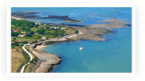

Infos Pratiques
Pour venir aux Cariatides
+ En voiture
+ Depuis le nord
+ Depuis le sud
+ En train : TGV réservation
Coordonnées
Frédérique et Antoine Neri
Route Touristique
La Biroire
17310 St Pierre d'Oléron
Tél. : 05 46 47 21 41
Bienvenue sur notre site web
L’hébergement dans un autre esprit
Résidence de charme avec accès direct à la mer, sans même avoir à traverser de route, les Cariatides, creusées dans la dune, vous offrent un espace entièrement dédié au bien-être et à la nature. Chez nous, point de béton ! Seulement des arbres, des herbes et des fleurs…
Les hébergements s'organisent autour des lieux de vie : le parc de 2 hectares parfaitement entretenu, la piscine de 12m par 6m, le mini-golf, le court de tennis, la barbecue et le jardin pour chaque maison.
Depuis l’origine, nous nous sommes attachés à privilégier la qualité de l'accueil et à afficher les valeurs qui nous tiennent à coeur : respect, écoute, disponibilité, honnêteté et discrétion.
Nous vous proposons une nouvelle approche de l’hébergement et du tourisme : hors des standards, nous mettons un point d’honneur à vous offrir un accueil stylé, chaleureux, simple, précis sans prétention ni ostentation.
Le plus !
Un accès WiFi entièrement gratuit !
Alors, venez-vous ressourcer dans ce havre de paix et de tranquillité au sein de l'île d'Oléron !
À découvrir
- L'île et son histoire
- La Citadelle du Château
- Le phare de Chassiron
- Le Fort Boyard